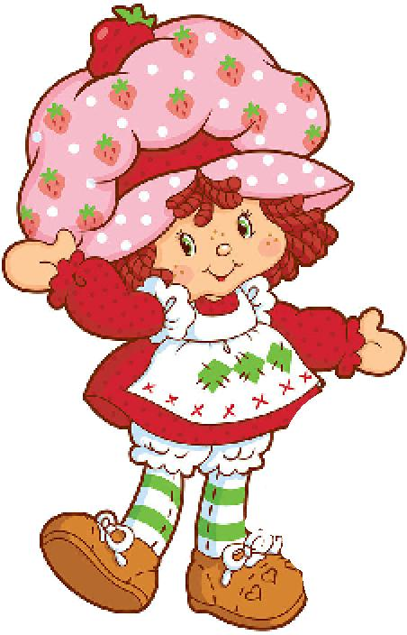

Strawberry Shortcake

Description
Summertime magic desserts :==D
Ingredients
- 3 cups all-purpose flour
- 1/2 cup white sugar
- 1 tablespoon baking powder
- 1 teaspoon salt
- 1 cup cold buttermilk
- 1 large egg yolk
- 1 teaspoon vanilla extract
- 12 tablespoons cold unsalted butter, cubed
- 1/2 cup sliced strawberries
Steps
- Preheat oven to 400 degrees F. Grease 10-in skillet.
Line with parchment paper
- Whisk flour, sugar, baking powder, and salt for shortcake together
in a large mixing bowl. Whisk buttermilk, egg yolk, and vanilla
together in a glass measuring cup until evenly combined; set aside.
- Scatter the butter pieces over the flour mixture. Use a rubbing
motion with your fingertips and cut the butter into the flour
mixture to distribute. Create a well in the center of the flour
mixture. Pour the buttermilk mixture into the center of the well.
Use a rubber spatula to mix the flour into the buttermilk
mixture to form a moist, shaggy dough.
- Transfer the dough to the prepared skillet. Smooth the dough to
distribute evenly in the pan.
- Bake in the preheated oven until golden brown and baked through,
25 to 30 minutes. Cool for 10 minutes.